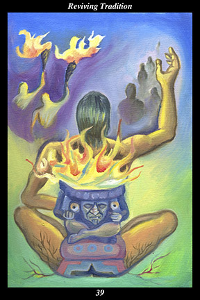

 | IMAGEThe ancient spirit of fire takes the form of a male warrior, who is made part of the land by the roots growing like veins through his body and the earth. His arm is raised, greeting the long line of people in shadow that approach him. Another line of people, their torches rekindled, depart in light. |
INTERPRETATION
This hexagram depicts the ancestors’ inheritance passing from individual to individual and from generation to generation. The ancient spirit of fire symbolizes the universal tradition of fire-making, whose timeless ritual unites all people in a common heritage. The male warrior symbolizes the self-discipline and training needed to stand against greed, ambition, and materialism. That he is made part of the land means that you find your spiritual home in the site of your own lifetime. The long line of people in shadow is a symbol of those seeking to find their way back to a balanced and harmonious way of life. The line of people departing with torches rekindled is a symbol of those who find the light of the ancestors inside their own hearts and carry it through the darkness of their own time. Taken together, these symbols mean that you resist spiritual erosion the way a mountain of righteousness stands against the wind of corruption and the rain of meaninglessness.
ACTION
The masculine half of the spirit warrior views everything as a buried treasure left behind by the spiritual ancestors for their descendants. It is a time for holding fast to what lasts rather than getting distracted by the novel or overwhelmed by the fleeting. Avoid participating in the fads and fashions of the day, seeking instead to uphold the values and world view of a more spiritual time. This means, first and foremost, respecting and honoring all that is not human: when matter is seen as devoid of spirit, then nature can be desecrated without a second thought; when one form of nature is seen as devoid of spirit, then all forms of life can be desecrated without a second thought; when one form of life is seen as devoid of spirit, then human beings can desecrate one another without a second thought. For this reason, the spirit warrior sees the world as the divine homeland shared by the living and the dead and those not yet born. Recognizing that meaningfulness is hidden from those who attack it, you look into the secret heart of things and see the One Spirit of creation everywhere you look. Recognizing that meaningfulness is an open secret to all but the greedy, ambitious, and materialistic, you bury the treasure again in your own turn so that your descendants will find their secret heart.
INTENT
Even though you feel out of step with the wounded spirit of the time, you are actively involved in healing it: recognizing that its illness is meaninglessness, you feed it the medicine of meaningfulness day and night throughout your life. Just as the fire of light and warmth must be fed wood and air to continue burning, the spirit of the time must be fed the joy and insights born of meaningfulness if it is to continue living: without the tradition of meaningful consecration to feed it, the spirit of the time will eventually die and be replaced by that of meaningless desecration. For this reason, the spirit warrior keeps alive the ancient tradition of training every thought and feeling to reflect the hidden sacredness of every moment.
SUMMARY
The more you put the world view of the ancients into practice, the more you have to offer others. Be generous with what you have learned but do not stop learning: just as people depend on a well for their water, the well depends on the invisible river below ground for its water. Assume that you will understand matters better in the future and act with a corresponding degree of humility.
THE LINE CHANGES
1° Take stock of those closest to you—what are their strengths, what are their weaknesses, how might you harm one another? Take this into account in all your actions and make your intentions clear in all your communications. With this as a basis, you can avoid any unnecessary rifts between allies.
2° Take stock of those closest to you—what are their needs, what are their sorrows, how might you comfort one another? Take this into account in all your interactions. With this generosity of spirit as a basis, you can forge unbreakable bonds with each of your allies.
3° The alliance is splitting into two camps—one where discipline is too strict and the other, too lenient. When conduct is too severe, members find fault everywhere—when too frivolous, members do not even question their own effectiveness. Get rid of extremists on both sides and restore the balance.
4° Ethics emerge from bad judgment—they are the collective memory of what does not
benefit the whole. Those who work together to serve others must encourage one another to maintain humility and respect at all times, even in private. Without the proper attitude, servants become masters.
5° Principles emerge from ethics—they are the collective memory of what is worth striving for. Peace is achieved when leaders are content and sincere—prosperity is achieved when leaders do not concentrate the wealth. Nothing holds people together better than sustained peace and prospering.
6° Wisdom emerges from principles—it is the collective memory of what produces happiness. Those who evaluate their own conduct, building on their successes and correcting their faults, dwell together in shared well-being. This is the road of freedom that leads to the ecstatic life.